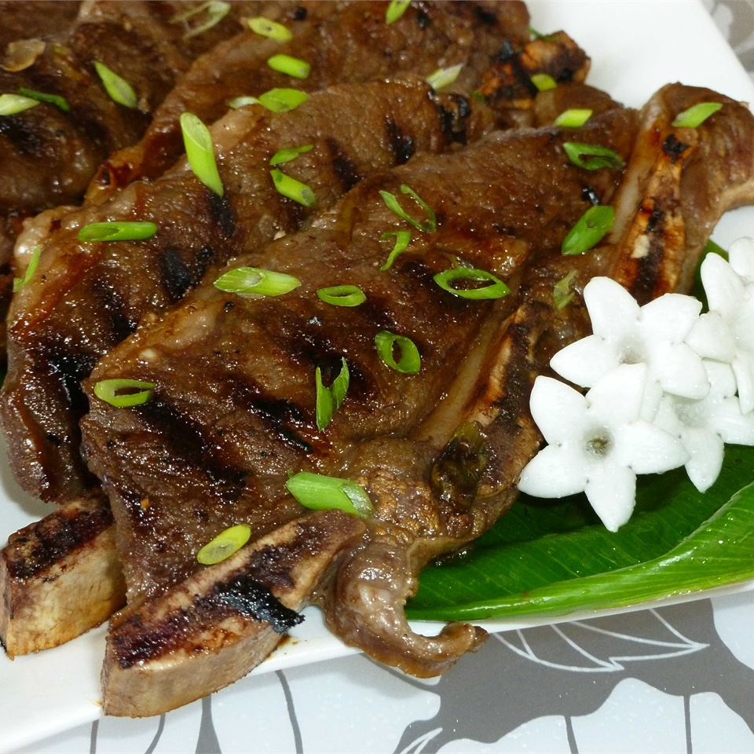

Kalbi

Ingredients
- ¾ cup soy sauce
- ¾ cup brown sugar
- ¾ cup water
- 2 green onions, chopped
- 1 garlic clove, minced
- 1 tablespoon Asian (toasted) sesame oil
- 2 pounds Korean-style short ribs (beef chuck flanken, cut 1/3 to 1/2 inch thick across bones)
Steps
- Stir together soy sauce, brown sugar, water, green onions, garlic, and sesame oil in a bowl until sugar has dissolved.
- Place ribs in a large resealable plastic bag. Pour marinade over ribs. Seal the bag and refrigerate for 3 hours to overnight.
- Preheat an outdoor grill for medium-high heat; lightly oil the grate.
- Remove ribs from the bag; shake off excess marinade and discard marinade. Grill ribs on the preheated grill until meat is still pink but not bloody nearest the bone, 5 to 7 minutes per side.